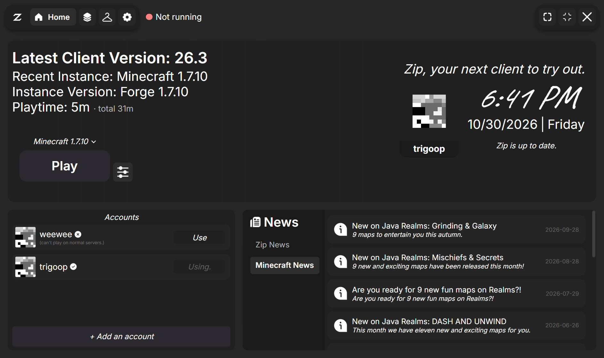
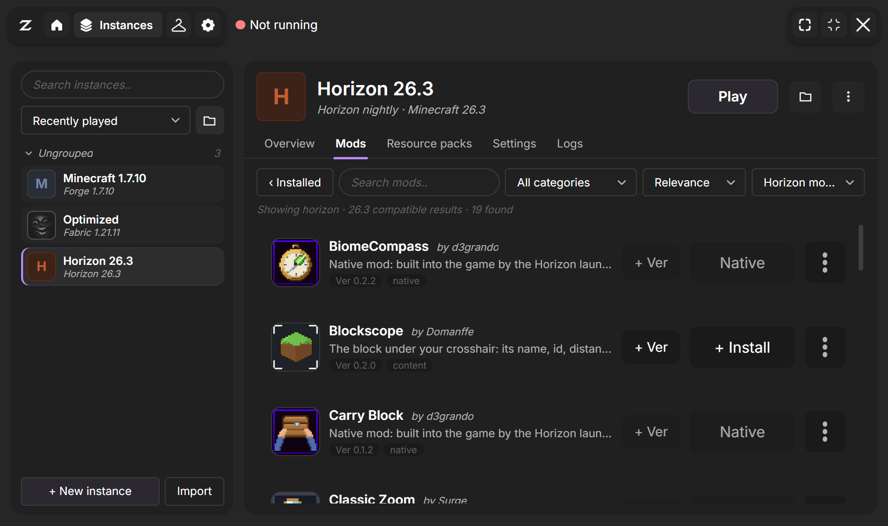
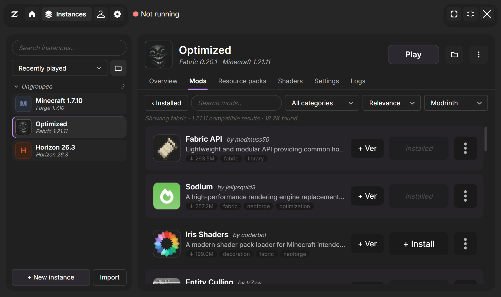

Every Minecraft version. One light launcher.
Zip installs and launches Minecraft: Java Edition from the very first build to the newest snapshot, with Fabric, Forge, NeoForge, Quilt, and Horizon, the game rewritten in Rust.
No account with us. No ads. No telemetry. Produced by Krizuvo.

Everything a launcher should do, nothing it shouldn't.
Built with a Rust core and a small native window, so it starts fast and stays out of the way while you play.
Isolated instances
Keep as many setups as you like, each with its own version, loader, mods, Java, memory and game folder. Duplicate, export, import and repair them.
Mods, packs and shaders
Search Modrinth and CurseForge, install with required dependencies, switch mods on and off, and update them in one click.
Modpack imports
Bring in Modrinth .mrpack files, CurseForge .zip packs and Prism Launcher instances. Files are checked and extracted safely.
Optimized Mode
Zip reads the Minecraft version, the loader and your RAM, then picks memory and garbage-collector settings for you. It can warn you before the game runs out of memory.
Skins in 3D
Preview skins on a rotating 3D model, switch between classic and slim arms, keep a library and upload a skin to your Minecraft profile.
Secure sign-in
Sign in with Microsoft on Microsoft's own page. Tokens stay protected on your PC, and your password never touches Zip.
Six themes
Dark, OLED, Midnight, Ember, Forest and Light, any accent colour, UI scaling and reduced motion.
The right Java, automatically
Zip downloads the Java version each Minecraft release needs and verifies every file, so old and new versions both just work.
Signed updates
When a new version is out, Zip asks if you want it. Updates install only if their signature matches Zip's release key.
Play Minecraft on Rust.
Pick Horizon (Rust) when you create an instance and Zip sets up Horizon, a from-scratch rewrite of Minecraft: Java Edition in Rust. It runs natively, without Java.
- Downloaded from Horizon's official releases and installed only if their signed checksums verify
- Prepared once from your own Minecraft files, kept up to date automatically
- Browse and install Horizon content mods right in Zip
- Works with your Microsoft account or an offline profile
Horizon is an independent open-source project (MIT licence) by its own authors at github.com/horizon-rust. It is not made by Krizuvo and is not affiliated with Mojang or Microsoft.

Take a look around.

Your launcher, not a data collector.
Zip has no telemetry, no analytics and no ads, and there is no Krizuvo account to make. It only connects to the services a feature needs, like Mojang for game files or Modrinth for mods.
Stays on your PC
Settings, instances, worlds and logs live in your own user profile.
Protected tokens
Microsoft sign-in tokens are encrypted with DPAPI on Windows and kept in a user-only file on Linux.
Verified downloads
Game files, Java, mods and Horizon builds are checked against their checksums.
Signed updates
Zip refuses any update that isn't signed with its release key.
Get Zip Client
Version 2.3.0 for Windows 10 and 11 and 64-bit Linux.
Windows
Windows 10 or 11, 64-bit, with Microsoft Edge WebView2 (built into Windows 11).
Linux
64-bit x86 Linux. The .deb and portable builds use your system's WebKitGTK 4.1.
Downloads are served by GitHub. Windows SmartScreen may show a warning for new software; choose "More info" and "Run anyway" if you downloaded Zip from this page. On Linux, make the AppImage executable before you run it. By downloading you agree to the Terms of Use.
Questions, answered.
Is Zip free?
Yes. Zip is free to download and use, with no ads and no in-app purchases.
Do I need to own Minecraft?
To play online and on most servers you need a Microsoft account that owns Minecraft: Java Edition. Offline profiles are available for singleplayer and offline-mode servers only.
Is Zip an official Minecraft launcher?
No. Zip is an independent launcher produced by Krizuvo. It is not an official Minecraft product and is not approved by or associated with Mojang or Microsoft. It downloads game files from Mojang's official servers.
Is my Microsoft account safe?
You sign in on Microsoft's own website with a one-time code, so Zip never sees your password. The tokens Zip receives are encrypted with Windows Data Protection on Windows, kept in a file only your user can read on Linux, and never leave your computer except to talk to Microsoft and Minecraft services.
What is Horizon?
Horizon is an independent open-source project that rewrites Minecraft: Java Edition in Rust. Zip can install and run it for you. Java mods do not run on Horizon; Horizon has its own mods.
Where are my worlds and settings stored?
On Windows in %APPDATA%\Zip, on Linux in ~/.local/share/Zip, and in ~/.var/app/dev.ziplauncher.app for the Flatpak. The portable versions keep everything in a ZipData folder next to the program.
How do I uninstall Zip?
On Windows, use "Apps & features" in Windows Settings. On Linux, remove the package (sudo apt remove zip-launcher or flatpak uninstall dev.ziplauncher.app) or delete the AppImage. Your worlds stay in Zip's data folder until you delete it.